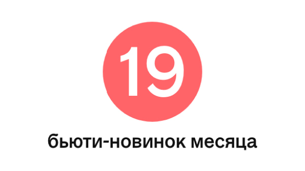
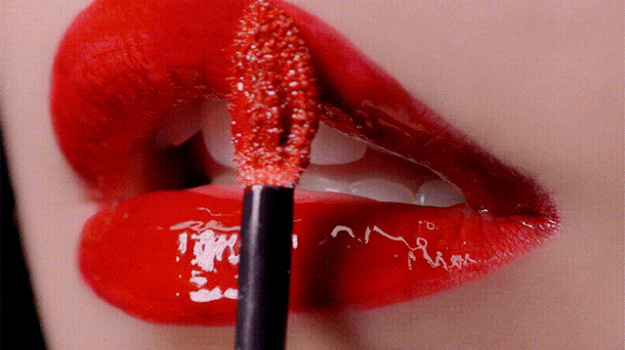
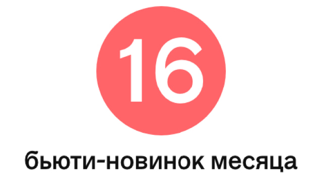

Пресса
- Октябрь 2020
- Сентябрь 2020
- Август 2020
- Июль 2020
Октябрь 2020
Патчи или крем для глаз: что эффективнее
Патчи для носогубных складок Foreverskin
Плотная порция ухода: 35 питательных кремов, масел и сывороток на холодный сезон
Ягоды маки – мощнейший антиоксидант, также стимулирующий обменные процессы.
Добро пожаловать: новый бренд на российском рынке – Haruharu Wonder
Рассказываем о новом корейском бренде по уходу за кожей лица, который создает средства для фундаментального бьюти-ритуала.
- 
19 бьюти-новинок месяца
Корейский бренд косметики в стильных упаковках (чего стоят овалы с сыворотками) теперь появился в России. Обратите внимание на средства для питания кожи.
Сентябрь 2020
ЛЕПИМ И СМОТРИМ: КАКИЕ ПАТЧИ ПОМОГАЮТ ПРИЙТИ В СЕБЯ ПОСЛЕ СЕРИАЛЬНЫХ ЗАПОЕВ
Когда поняла, что на часах уже за два ночи, а остановиться вряд ли получится, решила предпринять меры. Ими стала ночная глиттерная маска Dr. Gloderm. Хорошее лекало: до этого ни разу не пользовалась подобными средствами, так что на 15 минут почувствовала себя супергероиней. Эффект позитивный: кожа подтянулась, зона вокруг глаз увлажнилась.
Eco-ELLE: +1 бренд корейской косметики с очень крутым дизайном
Поклонники k-beauty, трепещите: в России появился новый корейский бренд органической косметики с чудным, но смысловым названием Haruharu Wonder.
Встретились русский, немец, француз и два корейца: новые косметические марки в России
Haruharu сравнивают свои средства с утренней чашкой кофе — ритуал, который мы выполняем каждый день. Поэтому упаковки сделаны в виде стаканчиков. После того, как крем закончится, марка предлагает использовать их повторно — в качестве горшка для цветов, подставки для карандашей и тому подобного.
Кофейные стаканы, конопля и котики — в бьюти-новинках этой недели
Теперь и в России — корейский бренд, который прославился благодаря двум составляющим. Раз — упаковке кремов в виде стаканчика кофе. Два — активному ингредиенту ферментированному черному рису.

Новинки декоративной косметики для осеннего макияжа
Что касается ровного тона, то его обеспечит жидкая тональная основа One Drop Miracle Air Tint. Средство, которое вы практически не будете ощущать, скроет все несовершенства и благодаря мелкодисперсной пудре в составе продержится весь рабочий день.
Август 2020
- 
Зеркальный блеск для губ, молочко для продления загара и другие бьюти-новинки недели
Сыворотки, кремы и флюиды: главные новинки средств для лица
- 
16 бьюти-новинок месяца
Мыло, напоминающее молочный пудинг, можно использовать и для умывания лица. Но лучше не каждый день. Если вы думали, что самые инстаграмные патчи — золотые, значит, вы не пробовали эти, напоминающие сашими из лосося. Корейское тональное средство, которое ничем не уступает бестселлерам в категории BB-кремов, а по цене их даже обыгрывает.